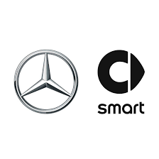

Mercedes-Benz Group
Mercedes-Benz Group AG (pronunciado /mɛʁˈt͡seːdəs bɛnts/ⓘ), anteriormente Daimler, es una empresa multinacional automotriz alemana
con sede en Stuttgart, Baden-Württemberg.
Daimler-Benz se formó con la fusión de Benz & Cie y Daimler Motoren Gesellschaft en 1926. La compañía pasó a llamarse DaimlerChrysler
al adquirir el fabricante estadounidense de automóviles Chrysler Corporation en 1998
y fue renombrada nuevamente como Daimler tras la venta de Chrysler en 2007. En febrero de 2022, Daimler pasó a llamarse Mercedes-Benz Group
Marcas que pertenecen a este grupo
A este grupo pertenecens:

Volver